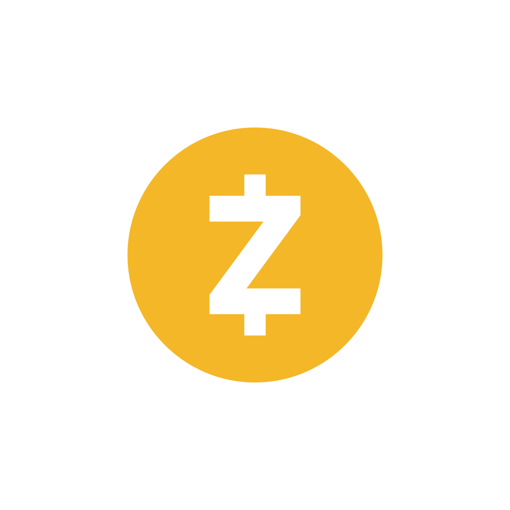

Leaders
Owner · coordinators

OpenZcashThe service behind Participate models communities and subcommunities. Each one has its own leaders and its own sustainability treasury.
A working group, a region or a program with its own decisions.
Its own members and invitations, its own review rules.
Its own discussions and moderation, on the same record.